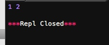
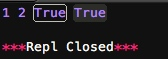
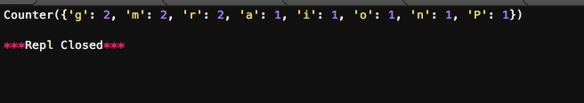

Python中有很多內建模块可以直接使用，无需额外安装。
collection
collections是Python内建的一个集合模块，提供了许多有用的集合类。
namedtuple
我们知道tuple可以表示不变集合，例如，一个点的二维坐标就可以表示成：
p = (1,2)
但是，看到(1, 2)，很难看出这个tuple是用来表示一个坐标的。
定义一个class又小题大做了，这时，namedtuple就派上了用场：
from collections import namedtuple
Point = namedtuple('Point',['x','y'])
p = Point(1,2)
print p.x , p.y

namedtuple是一个函数，它用来创建一个自定义的tuple对象，并且规定了tuple元素的个数，并可以用属性而不是索引来引用tuple的某个元素。
这样一来，我们用namedtuple可以很方便地定义一种数据类型，它具备tuple的不变性，又可以根据属性来引用，使用十分方便。
可以验证创建的Point对象是tuple的一种子类：
print p.x , p.y ,isinstance(p, tuple),isinstance(p, Point)

类似的，如果要用坐标和半径表示一个圆，也可以用namedtuple定义：
# namedtuple('名称', [属性list]):
Circle = namedtuple('Circle', ['x', 'y', 'r'])
deque
使用list存储数据时，按索引访问元素很快，但是插入和删除元素就很慢了，因为list是线性存储，数据量大的时候，插入和删除效率很低。
deque是为了高效实现插入和删除操作的双向列表，适合用于队列和栈：
from collections import deque
q = deque(['a','b','c'])
q.append('x')
q.appendleft('y')
print q

deque除了实现list的append()和pop()外，还支持appendleft()和popleft()，这样就可以非常高效地往头部添加或删除元素。
defaultdict
使用dict时，如果引用的Key不存在，就会抛出KeyError。如果希望key不存在时，返回一个默认值，就可以用defaultdict：
# -*- coding: utf-8 -*-
from collections import defaultdict
dd = defaultdict(lambda: 'N/A')
dd['key1'] = 'abc'
print dd['key1'], dd['key2'] #key1存在，key2不存在

注意默认值是调用函数返回的，而函数在创建defaultdict对象时传入。
除了在Key不存在时返回默认值，defaultdict的其他行为跟dict是完全一样的。
OrderedDict
使用dict时，Key是无序的。在对dict做迭代时，我们无法确定Key的顺序。
如果要保持Key的顺序，可以用OrderedDict：
# -*- coding: utf-8 -*-
from collections import OrderedDict
d = dict([('a',1),('b',2),('c',3)])
print d # dict的Key是无序的
od = OrderedDict([('a',1),('b',2),('c',3)])
print od #这个是有序的

注意，OrderedDict的Key会按照插入的顺序排列，不是Key本身排序：
# -*- coding: utf-8 -*-
from collections import OrderedDict
od = OrderedDict()
od['z'] = 1
od['y'] = 2
od['x'] = 3
print od

OrderedDict可以实现一个FIFO（先进先出）的dict，当容量超出限制时，先删除最早添加的Key：
# -*- coding: utf-8 -*-
from collections import OrderedDict
class LastUpdatedOrderedDict(OrderedDict):
def __init__(self, capacity):
super(LastUpdatedOrderedDict, self).__init__()
self._capacity = capacity
def __setitem__(self, key, value):
containsKey = 1 if key in self else 0
if len(self) - containsKey >= self._capacity:
last = self.popitem(last=False)
print 'remove:', last
if containsKey:
del self[key]
print 'set:', (key, value)
else:
print 'add:', (key, value)
OrderedDict.__setitem__(self, key, value)
od = LastUpdatedOrderedDict(3)
od['z'] = 1
od['w'] = 2
od['a'] = 3
od['q'] = 4
print od

Counter
Counter是一个简单的计数器，例如，统计字符出现的个数：
# -*- coding: utf-8 -*-
from collections import Counter
c = Counter()
for ch in 'Programming':
c[ch] = c[ch] + 1
print c

小结
collections模块提供了一些有用的集合类，可以根据需要选用。